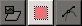
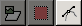

| 4. Transform Tools | ||
|---|---|---|
 |
Chapter 13. Toolbox |  |
| 4. Transform Tools | ||
|---|---|---|
| |
Chapter 13. Toolbox | |
Inside the Transformation tool dialog, you will find eight tools to modify the presentation of the image or the presentation of an element of the image, selection, layer or path. Each transform tool has an Option dialog and an Information dialog to set parameters.
Some options are shared by several transform tools. We will describe them here. More specific options will be described with their tool.
GIMP offers you three buttons which let you select which image element the transform tool will work on.
![[Note]](../images/note.png)
|
Note |
|---|---|
|
Remind that the Transform option persists when you quit the tool. |
When you activate the first button the tool works on the active layer. If no selection exists in this layer, the whole layer will be transformed.
When you activate the second button  the tool works on the selection contour only (the whole layer contour if no selection).
When you activate the third button,  the tool works on the path only.
“Direction” sets which way or direction a layer is transformed. The Traditional mode will transform the image or layer as one might expect. You just use the handles to do the transformation that want to see happen on the image or layer on the grid. When you then execute the transformation the image or layer is transformed to the shape and position you put the grid into.
Corrective Rotation is primarily used to repair digital images that have some geometric errors. To do so, you just have to align the grid to show the same error as the image or layer. If you then execute the transformation the grid and the image or layer wit it are transformed “backwards” until the grid is again in the rectangular and straight shape it was when you started.
The Interpolation drop-down list lets you choose the quality of the transformation. For more information about the different methods that can be employed, see the glossary entry Interpolation.
After transformation, the image can be bigger. This option will clip the transformed image to the original image size.
You can choose between several ways to clip:
Figure 13.86. Original image for examples
Original image
Rotation applied with “Adjust”
Rotation applied with “Adjust” and canvas enlarged to layer size
With Adjust: the layer is enlarged to contain all the rotated layer. The new layer border is visible; the whole layer becomes visible by using the → command (on the right).
With Clip: all what exceeds image limits is deleted.
If this option is selected, any border with no content that might occur after applying a transform operation to a layer will be removed.
This option works like the one described before, but makes sure, that the aspect ratio is maintained.
GIMP lets you select among four Preview possibilities:
Puts a frame to mark the image outline, with a handle on each corner. Movements will affect this frame only on the Preview, but the result of the transformation will concern either the content or the boundaries of the selection according to the selected Affect mode.
Puts a grid on the image, with four handles. Movements will affect this grid only on the Preview, but the result of the transformation will concern either the content or the boundaries of the selection according to the selected Transform mode.
Here, the preview is a copy of the image superimposed on the image, with an outline. Movements affect this copy and the underlying image appears.
Both turn at the same time.
Preview is only for greater convenience. Whatever your choice, result will be the same when you validate the transformation.
Options with grid activate a drop-list with two options: Number of Grid Lines will allow control over the total number of displayed grid lines. Use the slider to set the number of grid lines. Grid Line Spacing allows control over the distance between the grid lines. Use the slider to set the distance.
|
|
Note |
|---|---|
|
When rotating a path, Preview options are not valid: only Outline is active. |